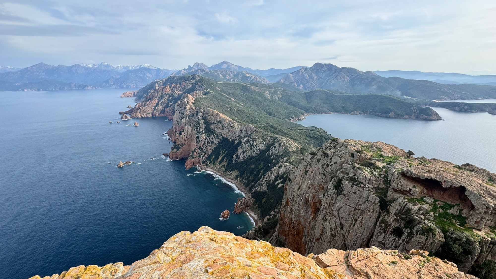
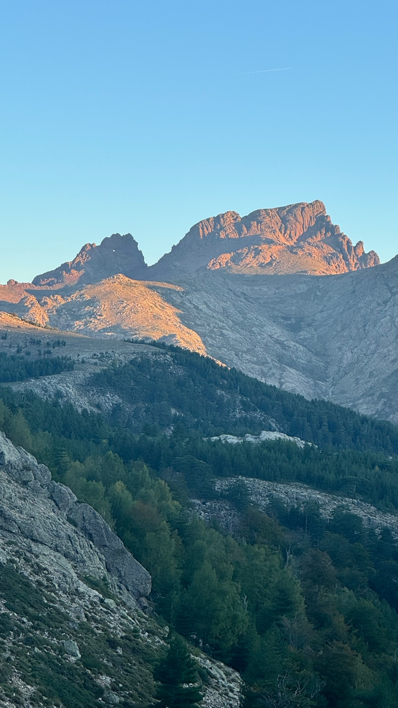
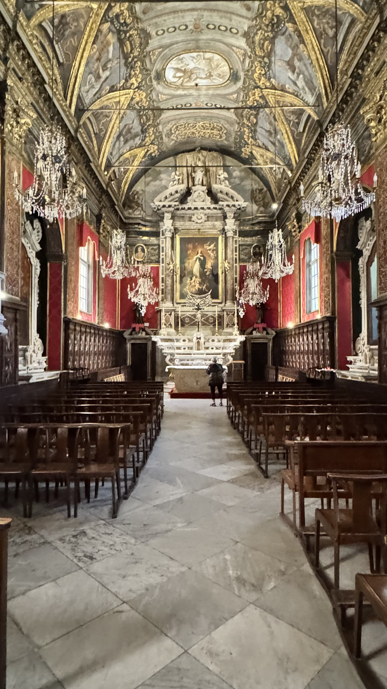
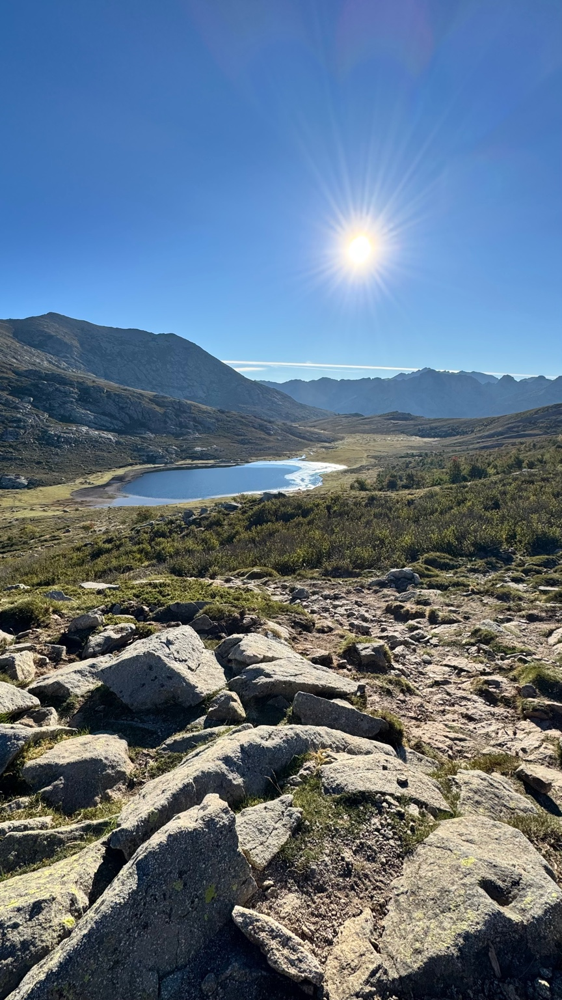
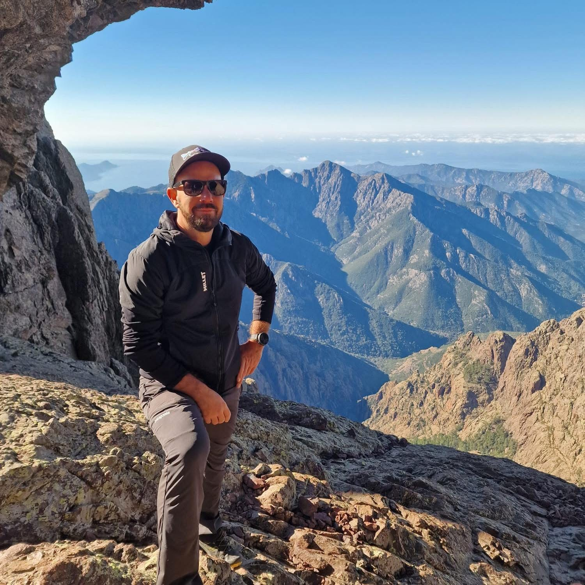

01 / Avec moi sur le terrain
Sorties accompagnées
Randonnées, raquettes et visites patrimoniales. Je vous accompagne tout au long de la sortie.
Découvrir les sorties ↓
À Spassu · Au rythme de la Corse
Randonnées, raquettes et patrimoine : je vous accompagne sur le terrain. Organiser votre voyage : je prépare votre voyage en autonomie. La Corse en hiver : cinq journées accompagnées, au rythme de la météo.
Explorer les possibilités ↓01 / Avec moi sur le terrain
Randonnées, raquettes et visites patrimoniales. Je vous accompagne tout au long de la sortie.
Découvrir les sorties ↓02 / Vous voyagez en autonomie
Je conçois votre itinéraire personnalisé et votre carnet PDF. Vous voyagez sans mon accompagnement sur le terrain.
Découvrir l’organisation de votre voyage ↓03 / Cinq journées avec moi
Une formule accompagnée spécifique : cinq journées dont le programme évolue selon la météo.
Découvrir la formule hiver ↓Un territoire, deux regards
Je vous emmène découvrir la montagne en toute sécurité : randonnées à la journée, sorties raquettes, treks et itinéraires sur mesure pour particuliers, familles et groupes.
Mon regard de guide-conférencier accompagne celui de l’homme de terrain : des paysages, des villages et des histoires à partager. Ensemble, nous choisissons une découverte adaptée à votre rythme, à vos envies et à la saison.
01 / Avec moi sur le terrain
Ces découvertes se vivent avec moi : je vous accompagne sur les sentiers comme lors des visites patrimoniales.

Randonnées & raquettes · avec moi
Randonnées à la journée, raquettes lorsque les conditions le permettent et treks sur mesure. Un accompagnement attentif, pour tous niveaux, en famille, entre amis ou en groupe.
Voir les sorties ↗
Visites patrimoniales · avec moi
Comprendre la Corse au-delà du paysage : villages, patrimoine et histoire de l’île, avec le regard d’un guide-conférencier. Des découvertes qui peuvent se combiner avec la marche.
Parlons de vos envies ↗02 / Organiser votre voyage · en autonomie
Je conçois votre itinéraire personnalisé et votre carnet PDF : programme jour par jour, temps de route réalistes et alternatives selon la saison. Vous voyagez ensuite en autonomie, sans mon accompagnement sur le terrain.
Groupe : 199 € pour l’ensemble du groupe, jusqu’à 8 personnes.
Organiser votre voyage ↗

03 / Cinq journées accompagnées · novembre à début avril
Votre programme guidé par la météo.
Une formule spécifique de cinq journées accompagnées par moi, entre randonnées, raquettes, villages et patrimoine. Le programme évolue selon la météo, les conditions du terrain, vos envies et votre niveau.
Découvrir La Corse en hiver ↗Seul ou à deux : sur devis. Hébergement et transports non compris.

Votre guide / Yann Pasqualini
Accompagnateur en montagne diplômé, passionné par notre île et ses reliefs, j’encadre des groupes avec attention et pédagogie, en adaptant chaque sortie au niveau et aux envies.
La montagne est un espace de partage, d’apprentissage et d’évasion. Mon objectif : vous faire vivre un moment authentique et inoubliable.
Encadrement sécurisé et personnalisé. Connaissance approfondie du terrain. Ambiance conviviale et respectueuse de la nature.
Yann Pasqualini
Avant de partir
Les itinéraires s’adaptent à votre niveau et à la saison. Sorties privées et sur mesure pour particuliers, familles, groupes et entreprises.
Découverte des sentiers de Corse : panoramas, nature, immersion.
À partir de 35 € / personne
Observation de la montagne enneigée. Location des raquettes possible.
À partir de 35 € / personne
Sortie privée : entreprises, familles, amis. Parcours au choix.
À partir de 250 € / groupe
Chaussures de randonnée, vêtements adaptés (trois couches), eau et encas, protection solaire. Bâtons recommandés.
Pour débutants et confirmés. Itinéraires adaptés à la météo et encadrement diplômé.
Disponibilités en semaine et le week-end : contactez-moi pour votre projet.
Et si l’on en parlait ?
Une question ? Une idée de sortie ? Contactez-moi !
Votre messagerie s’ouvrira pour envoyer votre demande.